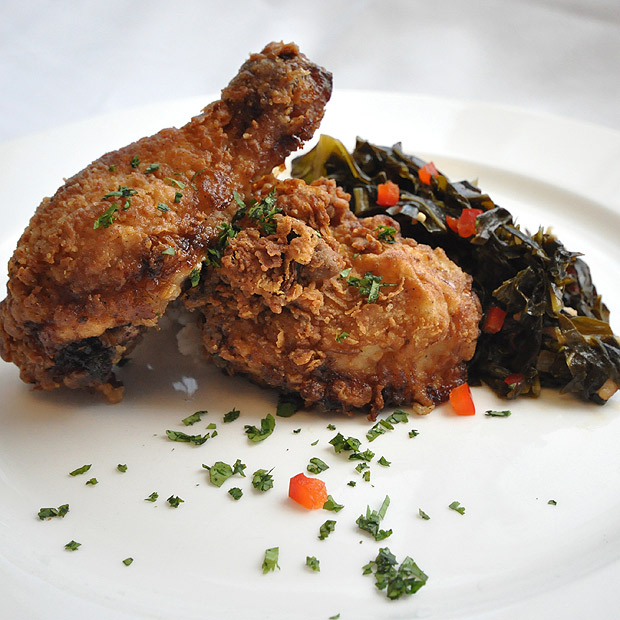

Temperature
-Minimum internal temperature 165°F
Serving Size
-2 pieces each
Yield
-10 servings
Chef's Note
-Chicken may be blanched first or shallow fried in a cast iron pan.
Techniques
-Deep-Frying
Geographic Region
-United States
Souther Style Fried Chicken
Ingeredients
Main Dish
- 10 each Chicken legs, thighs, and drumsticks, seperated
- 32 ounces Oil (for frying)
- 2 cups Flour, seasoned
- Salt, To taste
Marinade
- 16 ounces Buttermilk
- 1 tablespoon Cayenne pepper
- 2 each Garlic cloves, peeled, fresh, chopped
- 1 tablespoon Worcestershire sauce
- 1 tablespoon Onion, peeled, minced
Preparation
- Gather all the ingredients and equipment.
- Preheat the oven to 350°F (177°C).
- Combine ingredients for marinade, add chicken, and marinate for 1 hour. Drain and pat dry.
- Heat the oil in an appropriate pan for shallow-frying to 350°F (177°C).
- Dredge the chicken in flour, and shake off any excess.
- Place the chicken into the hot oil, and fry evenly, turning once, until golden brown.
- Remove the chicken from oil, and place on a sheet pan lined with absorbent paper. Lightly season with salt. Transfer chicken to a wire rack set on a sheet pan.
- Bake chicken in preheated oven until it reaches an internal temperature of 165°F (74°C).